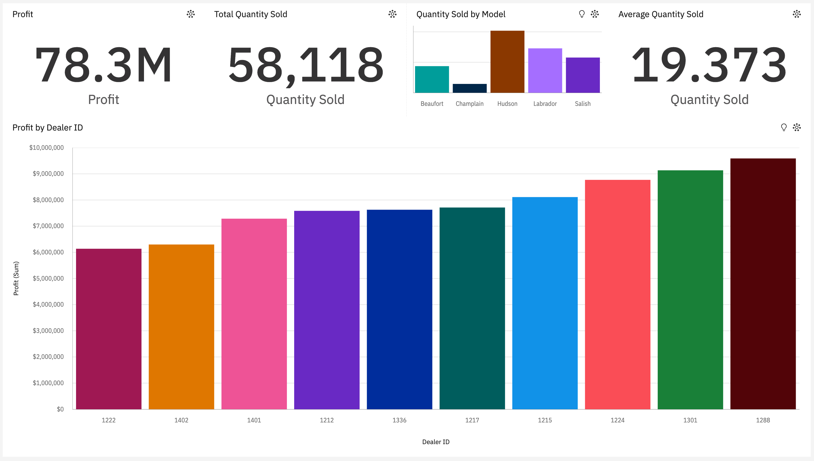

About this project
The purpose of this project is to showcase my skills and knowledge in IBM COGNOS Business Intelligence and Analytics with Watson Software.
Scenario
As a regional manager for a chain of car dealerships you need to build out a dashboard to allow you to understand your sales and service departments.
IBM Cognos Live Interactive Dashboard
Live and Interactive Dashboard - Use 'Sales' & 'Service' tab to navigate between dashboards
Click on Fullscreen icon for the best experience
Snapshots of dashboard
Sales Data
Service and Recalls Data

Information & Key Findings
Sales Data Dashboard
- Total profit (top graph #1)
- Total quantity sold (top graph #2)
- Quantity sold by car model (top graph #3)
- Average quantity sold (top graph #4)
- Profit by dealers-Dealer ID (center graph #5)
Hudson is the most popular car model with 20,365 unit sold compared to the total quantity sold of 58,118.
That is 35% of the quantity sold.
Service and Recalls Data Dashboard
- Total number of recalls per model of car (top-left graph #1)
- Total cusomer sentiment count by positive, neutral, and negative reviews (top-right graph #2)
- Quantity of cars sold per month compared to the profit (bottom-left graph #3)
- Number of recalls by model and affectted system with heatmap (bottom-right graph #4)
Hudson model has the second lowest number of recalls.
From the heatmap, this model seems to have to least system issues, the darkest fields (number of recalls by affected system) are 'Airbag' and 'Other',
which are significantly less concerning compared to other issues.
Dataset
Dataset available on IBM Community website
https://community.ibm.com/accelerators/?context=analytics&type=Data&industry=Automotive
Term of Use
https://developer.ibm.com/terms/ibm-developer-terms-of-use/